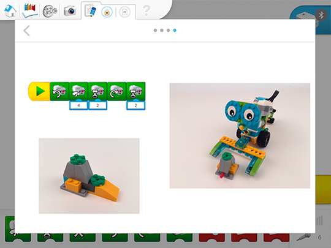

Using the Documentation Tool
The pupils should take some time to compile the information that they have collected throughout this project. Depending on which skill(s) you would like to focus on, you might ask each team or pupil for one or more of the following:
-
A sketch of their strategy (Decomposition)
-
A video of their robot collecting the moon modules (Evaluation)
-
A video of them explaining their solution (Abstraction)
-
A screen capture of their programming string (Algorithmic Thinking)
-
An explanation of their program (Algorithmic Thinking)
-
Pictures and explanations of some of the tests that they carried out during the project (Evaluation)
